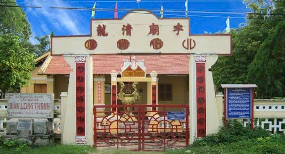
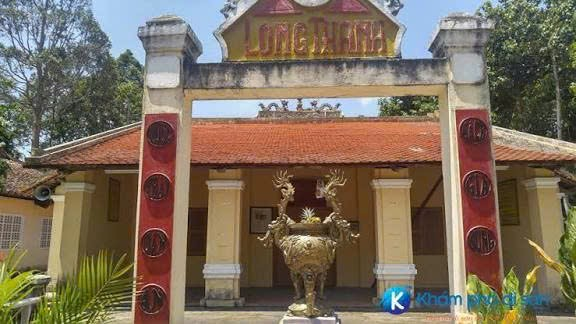
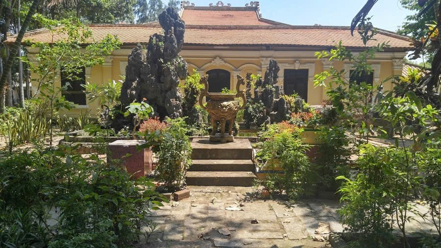
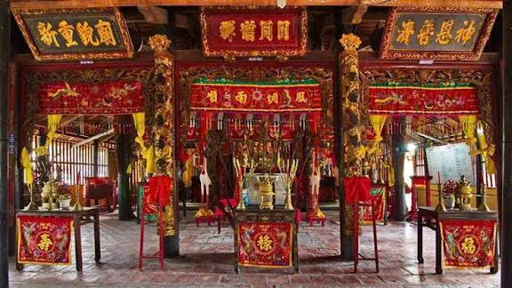

Trung tâm sinh hoạt tín ngưỡng và văn hóa cộng đồng tại Vĩnh Long.
Đình Long Thanh được xây dựng vào thế kỷ XIX, là nơi thờ Thành Hoàng làng – vị thần bảo hộ cho cư dân địa phương. Ngôi đình không chỉ mang giá trị tâm linh mà còn là trung tâm sinh hoạt văn hóa cộng đồng, nơi diễn ra các lễ hội truyền thống, nghi lễ dân gian và hoạt động gắn kết cộng đồng.
Kiến trúc đình mang đậm phong cách truyền thống Nam Bộ với mái ngói cong, kết cấu gỗ bền vững và các họa tiết chạm khắc tinh xảo. Qua nhiều lần trùng tu, đình vẫn giữ được vẻ uy nghi, cổ kính và giá trị lịch sử nguyên vẹn.



